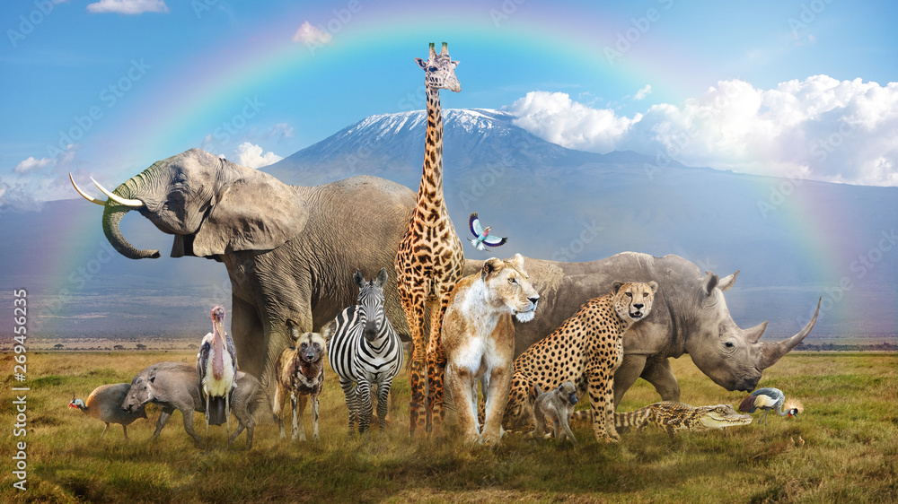

Welcome to our Wild Animal Adoption website! Here, you have the incredible opportunity to make a lasting difference in the lives of magnificent creatures that roam our planet. Through our platform, you can embark on a unique journey of compassion and conservation by adopting a wild animal. Whether you're captivated by the grace of a cheetah, the majesty of an elephant, or the enigmatic charm of a snow leopard, we offer a diverse range of endangered species awaiting your support. By adopting, you become a vital contributor to their protection, habitat preservation, and overall well-being. Join us today in safeguarding our planet's precious wildlife and ensuring a future where every roar, trumpet, and howl echoes through generations to come.
At our Wild Animal Adoption website, we believe in the power of individual action to create meaningful change. By choosing to adopt, you become a conservation hero, championing the cause of wildlife protection and biodiversity preservation. Your adoption not only provides essential resources for the animal's care, but it also supports vital research and community outreach programs that promote sustainable coexistence between humans and wildlife. Through your involvement, you help create a world where wild animals thrive in their natural habitats, inspiring awe and wonder for generations to come.
Our commitment goes beyond a simple transaction. We are dedicated to ensuring transparency and accountability in every aspect of our work. When you adopt a wild animal, you receive regular updates on their progress, behavior, and milestones achieved, deepening your connection with the adopted species. Additionally, we strive to educate and empower our adopters through informative resources, fostering a deeper understanding of the challenges faced by these incredible creatures. Together, we can rewrite the story of endangered species, turning it into one of hope, resilience, and successful conservation efforts. Join us today and embark on an unforgettable journey of compassion, conservation, and a shared responsibility to protect our planet's magnificent wildlife.